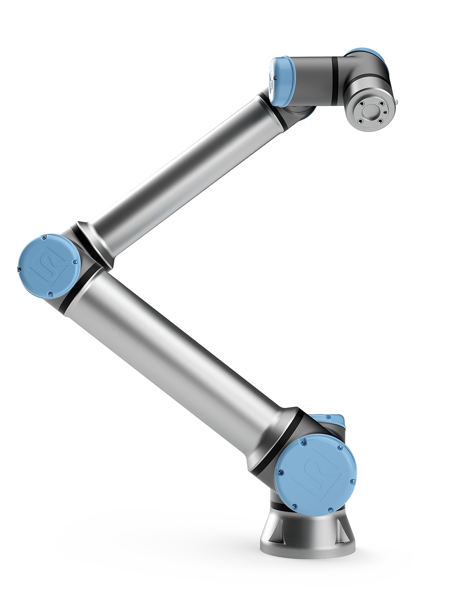
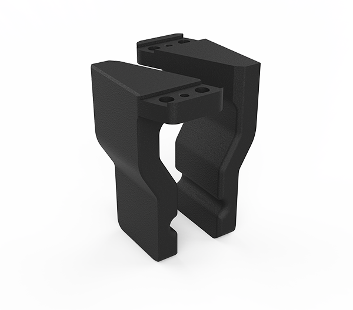
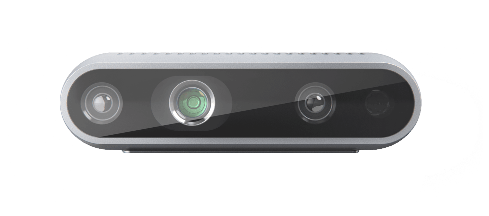
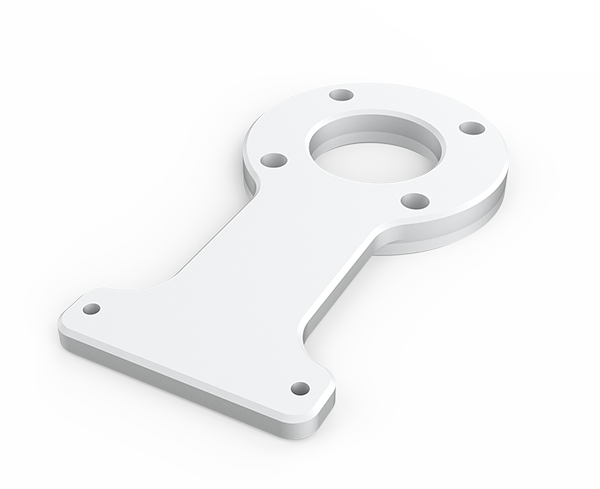
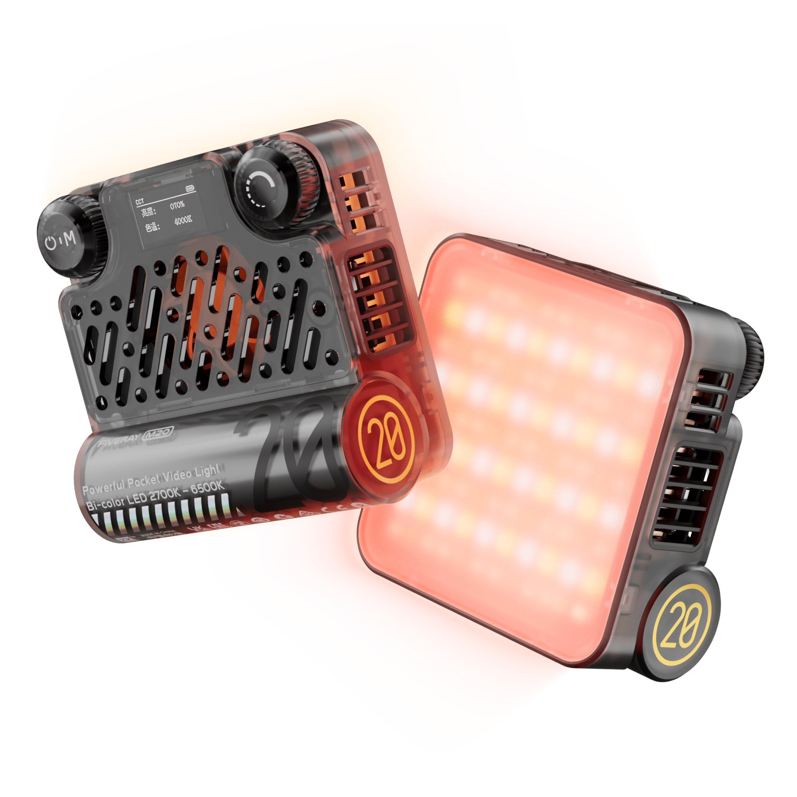

We present the first method capable of photorealistically reconstructing a non-rigidly deforming scene using photos/videos captured casually from mobile phones.
Our approach augments neural radiance fields (NeRF) by optimizing an additional continuous volumetric deformation field that warps each observed point into a canonical 5D NeRF. We observe that these NeRF-like deformation fields are prone to local minima, and propose a coarse-to-fine optimization method for coordinate-based models that allows for more robust optimization. By adapting principles from geometry processing and physical simulation to NeRF-like models, we propose an elastic regularization of the deformation field that further improves robustness.
We show that Nerfies can turn casually captured selfie photos/videos into deformable NeRF models that allow for photorealistic renderings of the subject from arbitrary viewpoints, which we dub "nerfies". We evaluate our method by collecting data using a rig with two mobile phones that take time-synchronized photos, yielding train/validation images of the same pose at different viewpoints. We show that our method faithfully reconstructs non-rigidly deforming scenes and reproduces unseen views with high fidelity.
The robot system used in the competition consists of a UR10e collebrative robot, a Robotiq Hand-E gripper, a pair of 3D-printed fingertips, a Realsense D435i RGB-D camera, a camera bracket, and a ZHIYUN FIVERAY M20 fill light.
| Equipment | Image | Description |
|---|---|---|
| UR10e Cobot |  | The UR10e cobot is mounted with the table and controlled through the real-time data exchange (RTDE) interface by the laptop. |
| Robotiq Hand-E gripper |

|
The Hand-E gripper is mounted on the tool flange of the UR10e cobot and controlled via the UR10e. |
| 3D-printed fingertips |  | The fingertips are re-designed based on the original fingertips of the Robotiq Hand-E gripper to adapt to the competition tasks by adding grooves. They are 3D-printed with nylon (HP PA12). |
| Intel Realsense D435i camera |  | The Realsense D435i RGB-D camera is mounted on the UR10e cobot through a bracket and connected to the laptop through a USB cable. |
| Camera bracket |  | The camera bracket is designed to mount the Realsense D435i RGB-D camera on the UR10e cobot. It is frabricated by CNC with Al6061. |
| ZHIYUN FIVERAY M20 fill light |  | The ZHIYUN FIVERAY M20 fill light is mounted on the camera to provide sufficient illumination. It is up to 2010 Lux (0.5m) and able to work for more than 40 minutes without charging. |
The robot system used in the competition consists of a UR10e collebrative robot, a Robotiq Hand-E gripper, a pair of 3D-printed fingertips, a Realsense D435i RGB-D camera, a camera bracket, and a ZHIYUN FIVERAY M20 fill light.
The task board is placed at a random orientation on two velcro strips to hold it in place for a trial. Therefore, for all tasks (including this task), the task board needs to be localized.
The task board is placed at a random orientation on two velcro strips to hold it in place for a trial. Therefore, for all tasks (including this task), the task board needs to be localized.
The task board is placed at a random orientation on two velcro strips to hold it in place for a trial. Therefore, for all tasks (including this task), the task board needs to be localized.
The task board is placed at a random orientation on two velcro strips to hold it in place for a trial. Therefore, for all tasks (including this task), the task board needs to be localized.
The task board is placed at a random orientation on two velcro strips to hold it in place for a trial. Therefore, for all tasks (including this task), the task board needs to be localized.
The task board is placed at a random orientation on two velcro strips to hold it in place for a trial. Therefore, for all tasks (including this task), the task board needs to be localized.
The task board is placed at a random orientation on two velcro strips to hold it in place for a trial. Therefore, for all tasks (including this task), the task board needs to be localized.
The robot system used in the competition consists of a UR10e collebrative robot, a Robotiq Hand-E gripper, a pair of 3D-printed fingertips, a Realsense D435i RGB-D camera, a camera bracket, and a ZHIYUN FIVERAY M20 fill light.